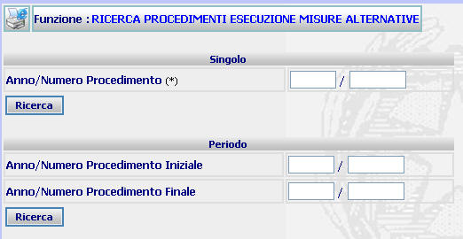

RICERCA PROCEDIMENTI ESECUZIONE MISURE ALTERNATIVE: La funzione consente di operare ricerche di procedimenti SIUS aventi come contenuto "Esecuzione misure alternative" nell'Ufficio di Sorveglianza di appartenenza con la duplice modalità: Singolo - Periodo (intervallo numerico).
LE MASCHERE VIDEO
La funzione viene realizzata attraverso la maschera seguente in cui sono presenti due sezioni :
| Singolo in cui posso inserire l'anno/numero del procedimento da ricercare; |
| Periodo in cui l'utente ha la possibilità di inserire l'anno/numero SIUS iniziale e quello finale che individuano l'intervallo numerico dei procedimenti da ricercare: |

COME FARE PER ...
| Per effettuare la Ricerca di Procedimento singolo l'utente deve: |
- Compilare i campi Anno/Numero procedimento
Confermare i dati inseriti nella maschera agendo sul bottone
. Se il procedimento esiste, allora viene visualizzata la maschera di elenco procedimenti relativi all'esecuzione misura alternativa
|
Per ricercare, attraverso la ricerca dei procedimenti compresi in un determinato intervallo numerico impostato dall'utente è necessario: |
- Inserire nella sezione seguente l'anno/numero iniziale e finale dei procedimenti che si ha necessità di ricercare;
Confermare i dati inseriti nella maschera agendo sul bottone
CAMPI
I dati che consentono di ricercare un procedimento sono i seguenti:
| NOME | DESCRIZIONE |
| Anno/Numero procedimento SIUS | Campo nel quale vanno inseriti l'anno ed il numero del procedimento da ricercare. |
| Anno/Numero procedimento iniziale - finale | Campi nei quali vanno inseriti l'anno ed il numero dell'intervallo dei procedimento da ricercare. |
PULSANTI
E' presente solo il pulsante
 di stampa del contesto (videata)
di stampa del contesto (videata)
BOTTONI
Oltre ai comandi funzionali relativi al menù verticale sono presenti i seguenti comandi:
|
COMANDI |
DESCRIZIONE |
|
|
A fronte di tale comando, il sistema dopo aver verificato la validità dei dati specificati, presenta l'elenco procedimenti relativi all'esecuzione misura alternativa nel caso di ricerca del procedimento singolo oppure l'elenco procedimenti di esecuzione misure alternative nel caso di ricerca per intervallo numerico |
CONTROLLI
A fronte della pressione
del bottone
 , il
sistema verifica che il procedimento esista
(ovvero che esista uno o più procedimenti nel caso di ricerca avanzata);
se il sistema non troverà alcun procedimento
rispondente ai criteri di ricerca impostati verrà visualizzato il seguente
messaggio:
, il
sistema verifica che il procedimento esista
(ovvero che esista uno o più procedimenti nel caso di ricerca avanzata);
se il sistema non troverà alcun procedimento
rispondente ai criteri di ricerca impostati verrà visualizzato il seguente
messaggio: